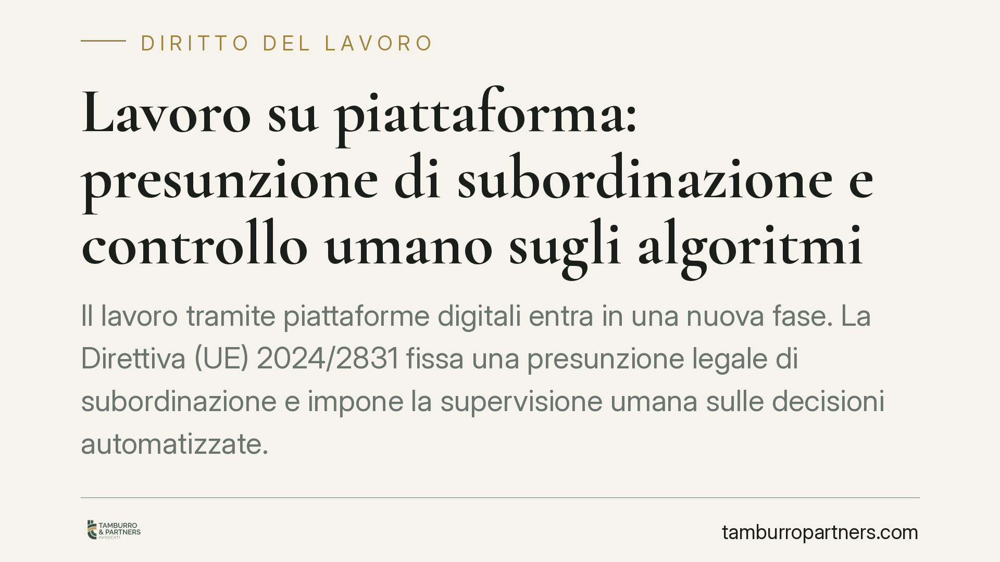

Lavoro su piattaforma: presunzione di subordinazione e controllo umano sugli algoritmi
Il lavoro tramite piattaforme digitali entra in una nuova fase. La Direttiva (UE) 2024/2831 fissa una presunzione legale di subordinazione e impone la supervisione umana sulle decisioni automatizzate. Il termine per il recepimento negli Stati membri è il 2 dicembre 2026. Per imprese e lavoratori del settore è il momento di prepararsi al cambiamento.

Il contesto
Il 23 ottobre 2024 il Parlamento europeo e il Consiglio hanno adottato la Direttiva (UE) 2024/2831, relativa al miglioramento delle condizioni di lavoro nel lavoro mediante piattaforme digitali (il cosiddetto *platform work*). Si tratta della prima cornice europea organica dedicata a rider, autisti e più in generale a chi svolge attività coordinate da un'applicazione.
È importante distinguere due piani spesso confusi. La Direttiva non è direttamente applicabile: fissa obiettivi che ciascuno Stato membro deve tradurre in norma interna. Il termine ultimo per il recepimento è il 2 dicembre 2026 (art. 29 della Direttiva). L'entrata in vigore delle regole in Italia dipenderà quindi dal decreto legislativo di attuazione, il cui iter non è ancora concluso. Allo stato, si parla di uno schema di decreto in corso di elaborazione: gli effetti concreti decorreranno dalla sua adozione e dalla data di efficacia che verrà fissata.
L'inquadramento normativo
Il nodo centrale è la presunzione legale di rapporto di lavoro subordinato. La Direttiva prevede che, quando emergono elementi di direzione e controllo esercitati dalla piattaforma, il rapporto si presuma subordinato, con conseguente inversione dell'onere della prova: non è il lavoratore a dover dimostrare la subordinazione, ma la piattaforma a dover provare l'eventuale genuina autonomia. Si tratta di una presunzione *relativa*, cioè superabile con prova contraria.
Il tema non nasce dal nulla. Nell'ordinamento italiano l'art. 2094 c.c. già definisce il lavoratore subordinato come chi presta la propria opera sotto la direzione dell'imprenditore. A ciò si aggiunge l'art. 2 del D.Lgs. 81/2015, che estende le tutele del lavoro subordinato alle collaborazioni etero-organizzate, anche tramite piattaforme. Sul punto la Corte di Cassazione, sentenza n. 1663/2020, ha riconosciuto ai rider l'applicazione della disciplina del lavoro subordinato in presenza di prestazioni organizzate dal committente. La Direttiva europea, quindi, rafforza e sistematizza una direzione già tracciata dalla giurisprudenza nazionale.
Un secondo pilastro riguarda la gestione algoritmica. La Direttiva impone trasparenza sui sistemi automatizzati di monitoraggio e decisione e prevede che le decisioni rilevanti (sospensioni, disattivazioni dell'account, assegnazione degli incarichi) siano soggette a supervisione umana. Questo profilo si intreccia con l'art. 22 del Regolamento (UE) 2016/679 (GDPR), che già riconosce all'interessato il diritto di non essere sottoposto a decisioni interamente automatizzate che producano effetti significativi sulla sua sfera.
Implicazioni pratiche
Per le piattaforme l'impatto è rilevante. La presunzione di subordinazione comporta, in caso di riqualificazione, l'applicazione di obblighi contributivi, retributivi e di tutela propri del lavoro dipendente. La gestione algoritmica dovrà essere documentata e affiancata da procedure di controllo umano verificabili.
Per i lavoratori cambia la posizione processuale: la contestazione della natura autonoma del rapporto risulta agevolata dall'inversione dell'onere della prova. Cresce inoltre il diritto a comprendere i criteri con cui l'algoritmo assegna turni, valuta le prestazioni o dispone disattivazioni.
Quanto alle sanzioni, la Direttiva demanda agli Stati membri la definizione di misure effettive, proporzionate e dissuasive. L'entità concreta delle sanzioni amministrative dipenderà quindi dal decreto italiano di recepimento e non è, allo stato, determinabile con precisione.
Cosa fare in concreto
- Mappate i modelli contrattuali in uso: individuate gli elementi (orari, disponibilità imposta, sistemi di rating) che possono far scattare la presunzione di subordinazione.
- Documentate il funzionamento dei sistemi algoritmici e predisponete procedure di supervisione umana sulle decisioni che incidono sul rapporto.
- Verificate la conformità dei trattamenti dati all'art. 22 GDPR, garantendo trasparenza e diritto di riesame delle decisioni automatizzate.
- Monitorate l'iter del decreto legislativo di attuazione: le tempistiche e l'entità delle sanzioni saranno definite in quella sede.
- Conservate la documentazione relativa alle modalità operative: sarà decisiva in caso di contenzioso sulla qualificazione del rapporto.
In sintesi
La Direttiva (UE) 2024/2831 consolida a livello europeo un orientamento già presente in Italia. Il recepimento, atteso entro il 2 dicembre 2026, richiederà a piattaforme e operatori una revisione strutturale dei modelli contrattuali e dei sistemi di gestione automatizzata. Consigliamo di avviare per tempo un'analisi di conformità, senza attendere la pubblicazione del decreto.
---
*Contributo informativo a cura di Tamburro & Partners - Avv. Giuseppe Tamburro. Non costituisce parere legale.*
Ogni storia di lavoro ha i suoi tempi.
Se gestisci HR e vuoi un confronto su contenzioso, ispezioni o licenziamenti, scrivi allo studio. Ti rispondiamo entro un giorno lavorativo.